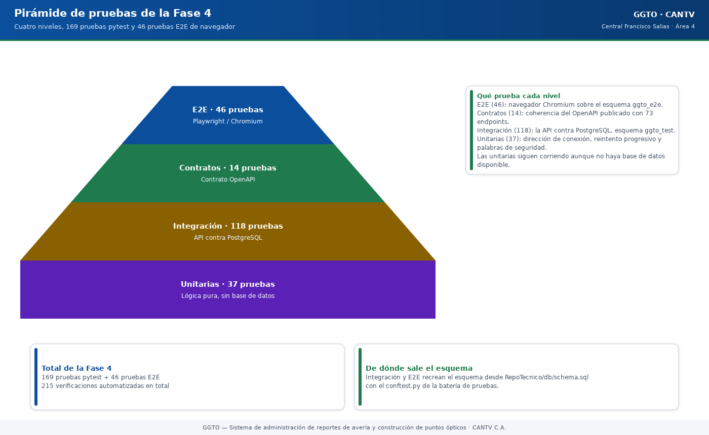

Sistema de administración de reportes de avería y construcción de puntos ópticos
Manual literal · DespliegueManual de pruebas y CI — GGTO (CANTV, Central Francisco Salias / Área 4)
Manual para todo público. Explica, en lenguaje sencillo, cómo se comprueba que la plataforma GGTO funciona bien antes de entregarla: qué tipos de prueba existen, en qué entornos aislados corren, cuántas pruebas se ejecutaron, qué revisores automáticos de calidad se usan y cómo funciona la integración continua (CI, la revisión automática en cada cambio de código). Cuando algo no está implementado, se dice con claridad. Este manual nunca escribe valores de credenciales: solo las menciona.
Manual para todo público. Explica, en lenguaje sencillo, cómo se comprueba que la plataforma GGTO funciona bien antes de entregarla: qué tipos de prueba existen, en qué entornos aislados corren, cuántas pruebas se ejecutaron, qué revisores automáticos de calidad se usan y cómo funciona la integración continua (CI, la revisión automática en cada cambio de código). Cuando algo no está implementado, se dice con claridad. Este manual nunca escribe valores de credenciales: solo las menciona.
1Empezar en 5 minutos
- Entienda la idea general. Hay cuatro niveles de prueba que se complementan: unitarias (lógica suelta), integración (API contra la base), contratos (que la API publicada sea coherente) y E2E (recorridos en un navegador real).
- Recuerde la regla de oro. Ninguna prueba toca producción. Los datos de prueba viven en
esquemas aislados:
ggto_testparapytestyggto_e2epara Playwright/Chromium. - Conozca el resultado de la Fase 4. Cerró con 169 de 169 pruebas
pytesten verde y 46 de 46 pruebas E2E en verde. Además, los tres revisores de calidad (ruff,mypyytscen modo estricto) no dejaron hallazgos. - Sepa qué corre solo. En cada
pushopull_requestsobre las ramasGGTOv2-DSH-GCPymain, GitHub Actions levanta un PostgreSQL 15 y ejecutaruff,mypyypytest. - Sepa qué falta. La cobertura mínima de 70 %, las migraciones con Alembic, la construcción de
la imagen y el despliegue automático, el espejo en GitLab CI y el análisis del frontend (
tsc) no están automatizados todavía.
2Estrategia de pruebas
La Fase 4 se planificó con el objetivo de validar el sistema entregado en la Fase 3 con 100 % de pruebas en verde. La estrategia se apoya en cuatro niveles complementarios y en un principio rector: ninguna prueba toca producción, sino esquemas aislados.

Código del gráfico (Mermaid)
flowchart TD
E2E["E2E de navegador — 46 pruebas<br/>Playwright/Chromium — esquema ggto_e2e"] --> CT["Contratos — 14 pruebas<br/>OpenAPI de la API"]
CT --> IN["Integración — 118 pruebas<br/>API contra PostgreSQL — esquema ggto_test"]
IN --> UN["Unitarias — 37 pruebas<br/>lógica pura, sin base de datos"]
UN -.-> BASE["Total Fase 4: 169 pruebas pytest + 46 E2E"]2.1Los cuatro niveles de prueba
El plan de pruebas enumera los niveles con su alcance:
2.1.1Unitarias
Prueban lógica pura, sin base de datos: la construcción de la dirección de conexión, el reintento progresivo (backoff) y las palabras de seguridad. No dependen de PostgreSQL y por eso siguen corriendo aunque no haya base disponible.
2.1.2Integración
Ejercitan la API contra PostgreSQL, con el esquema recreado desde RepoTecnico/db/schema.sql en el
esquema ggto_test. El esquema lo levanta el archivo conftest.py de la batería de pruebas.
2.1.3Contratos
Verifican que el contrato OpenAPI publicado (79 endpoints desde el ciclo D-67) sea coherente, esté versionado, esté
documentado y proteja las rutas privadas. La prueba construye el esquema con app.openapi() y
comprueba, entre otras cosas, que todas las rutas /api/ estén bajo /api/v1/.
2.1.4E2E de navegador
Recorren los flujos reales de la SPA (aplicación de una sola página) con Playwright/Chromium contra
la aplicación completa y el esquema ggto_e2e.
Quedan fuera de alcance las pruebas de carga, las pruebas de penetración (seguridad ofensiva) y la aplicación móvil Flutter (Ciclo 8, no desarrollado).
3Entornos de prueba
La batería distingue el esquema de pytest del esquema de Playwright y comparte una única vía de
acceso a la base mediante el proxy de Cloud SQL.
3.1ggto_test (pytest)
Es el esquema que usa la integración y los contratos. Su nombre se toma de la variable
GGTO_TEST_SCHEMA, con valor por defecto public. Con el valor de trabajo ggto_test, el archivo
conftest.py añade el search_path para que public siga resolviendo las extensiones pgcrypto y
pg_trgm. Si el esquema no es public, lo crea con CREATE SCHEMA IF NOT EXISTS antes de aplicar
schema.sql. La lógica del search_path proviene del parámetro DB_SCHEMA de la aplicación,
corregido durante la Fase 4 (hallazgo F4-01).
3.2ggto_e2e (Playwright)
Es el esquema aislado de las pruebas de navegador. El guion run_e2e.sh lo fija con
ESQUEMA="${DB_SCHEMA:-ggto_e2e}" y lo exporta como DB_SCHEMA. El guion seed_e2e.py lo reinicia
y siembra los datos desde schema.sql. La aplicación bajo prueba se levanta con ese esquema y la
dirección http://127.0.0.1:8090.
3.3Cloud SQL Auth Proxy
Ambos entornos usan la instancia compartida truekeate-db-dev a través del Cloud SQL Auth Proxy,
un programa que abre un canal seguro desde la máquina local hacia la base gestionada. El plan de
pruebas lo describe escuchando en 127.0.0.1:5433 y da el comando de arranque. El guion
run_e2e.sh usa ese puerto por defecto y comprueba la conectividad con psql. El proxy es
necesario porque la aplicación se ejecuta en local y la instancia es gestionada por Google. El
manual 02-cloud-run-y-cloud-sql.md de esta colección detalla la conexión.
3.4Chromium y LD_LIBRARY_PATH/FONTCONFIG_FILE
Chromium en modo headless (sin ventana visible) exige librerías del sistema y fuentes tipográficas.
El guion run_e2e.sh exporta LD_LIBRARY_PATH con ~/tools/libs y /tmp/playwright-libs, y
FONTCONFIG_FILE con la configuración de fuentes del usuario. El plan advierte que, sin fuentes,
«el navegador no emite eventos de texto y los encabezados quedan con tamaño cero (falsos
negativos)». El hallazgo F4-04 documenta el mismo problema y su mitigación. El comentario del
archivo helpers.js repite la advertencia.
4Pruebas backend
La batería de backend reúne pruebas unitarias, de integración y de contratos bajo el mismo pytest.
4.1Estructura de app/tests
El directorio app/tests/ contiene el paquete (__init__.py), el archivo conftest.py y trece
archivos test_*.py. Los niveles se distinguen por lo que cada archivo necesita:
| Archivo | Nivel | ¿Depende de la base? |
|---|---|---|
test_security.py |
Unitaria | No |
test_config_db.py |
Unitaria | No |
test_sectorizacion_cuadrilla0.py |
Unitaria | No |
test_ingesta_parser.py |
Unitaria | No |
test_contratos.py |
Contratos | No (usa app.openapi()) |
test_auth.py |
Integración | Sí |
test_config.py |
Integración | Sí |
test_casos_api.py |
Integración | Sí |
test_despacho_api.py |
Integración | Sí |
test_especiales_api.py |
Integración | Sí |
test_monitoreo_api.py |
Integración | Sí |
test_alertas_api.py |
Integración | Sí |
test_ingesta_api.py |
Integración | Sí |
4.2conftest.py
El archivo app/tests/conftest.py concentra la preparación del entorno de pruebas:
- Dirección y esquema de prueba: lee
GGTO_TEST_DB_URLyGGTO_TEST_SCHEMA. Si no hay dirección, las pruebas de integración se omiten conpytest.skipy las unitarias continúan. - Recreación del esquema: la fixture de sesión
engineaplicaRepoTecnico/db/schema.sqlsobre la base. Una fixture es un bloque de preparación quepytestejecuta automáticamente antes de las pruebas. - Aislamiento del limitador: una fixture
autouselimpia el contador de intentos de inicio de sesión antes y después de cada prueba, para que el limitador de RNF-22 no contamine la batería. - Cliente HTTP: la fixture
clientsustituyeget_dbpor una fábrica de sesiones y envuelve la aplicación enTestClient. - Usuarios de prueba:
TESTADM,TESTTECyTESTSUP, con una clave sintética definida en el propioconftest.py, creados por la fixtureadmin_token, que además devuelve las cabecerasBearerde cada rol. El valor de la clave no se reproduce aquí por ser una credencial. - Limpieza: el guion
SQL_LIMPIEZAborra los registros de prueba en orden de claves foráneas. La muestra de ingesta pseudonimizada está enRepoTecnico/muestras/detalle_averias_gpon_EJEMPLO.csv.
4.3Inventario por archivo
El informe de la Fase 4 desglosa las 169 pruebas ejecutadas:
| Archivo | Pruebas | Nivel |
|---|---|---|
test_alertas_api.py |
23 | Integración |
test_despacho_api.py |
17 | Integración |
test_casos_api.py |
17 | Integración |
test_sectorizacion_cuadrilla0.py |
16 | Unitaria |
test_monitoreo_api.py |
16 | Integración |
test_especiales_api.py |
15 | Integración |
test_contratos.py |
14 | Contratos |
test_config.py |
13 | Integración |
test_ingesta_parser.py |
12 | Unitaria |
test_auth.py |
11 | Integración |
test_security.py |
6 | Unitaria |
test_ingesta_api.py |
6 | Integración |
test_config_db.py |
3 | Unitaria |
| Total | 169 | — |
Algunos archivos declaran menos funciones que pruebas ejecutadas porque usan parametrización de
pytest: test_sectorizacion_cuadrilla0.py emplea @pytest.mark.parametrize y
test_monitoreo_api.py parametriza los periodos diario, semanal y mensual. Por eso el número
de casos ejecutados (169) coincide con el informe aunque el conteo de funciones def test_ sea
menor.
4.4Cómo ejecutarlas
El plan describe el procedimiento. El modo directo es:
# Proxy (una vez)
~/tools/cloud-sql-proxy --gcloud-auth --port 5433 \
truekeate-main:southamerica-east1:truekeate-db-dev &
# Integración + contratos
export GGTO_TEST_DB_URL="postgresql+psycopg2://ggtov2_app:<clave>@127.0.0.1:5433/ggtov2"
export GGTO_TEST_SCHEMA=ggto_test
python3 -m pytest app/tests -q
La cadena <clave> se obtiene del secreto ggtov2-db-password; no se escribe en este manual.
Sin GGTO_TEST_DB_URL, las pruebas de integración se omiten y las unitarias siguen corriendo.
5Pruebas E2E
Las pruebas E2E validan la SPA completa en un navegador real contra un backend local.
5.1RepoTecnico/pruebas/e2e
El directorio RepoTecnico/pruebas/e2e/ contiene el proyecto de Playwright: package.json,
playwright.config.js, helpers.js, inventario.js (utilidad de inspección) y la carpeta tests/
con once archivos .spec.js. La configuración fija testDir: ./tests, un timeout de 90 segundos,
expect de 20 segundos, workers: 1, fullyParallel: false y retries: 0, con baseURL tomada de
GGTO_E2E_URL. El proyecto es solo chromium, en modo headless, con viewport de 1440×900,
idioma es-VE y zona horaria America/Caracas. Genera reporte de lista, JSON en
../logs/e2e-resultados.json y HTML en ../logs/e2e-reporte. La versión declarada de
@playwright/test es 1.63.0.
5.211 archivos y 46 pruebas
El informe desglosa los once archivos y sus 46 pruebas:
| Archivo | Pruebas | Ámbito |
|---|---|---|
01-login.spec.js |
6 | Login válido e inválido, ruta protegida, cierre de sesión, menú de usuario |
02-navegacion.spec.js |
7 | Secciones, menú CONFIGURACIÓN, permisos de menú por rol, barra móvil, buscador |
03-casos.spec.js |
6 | Listado, filtros, búsqueda global, ficha, alta manual REF-… |
04-especiales.spec.js |
2 | Alta de caso especial y filtros |
05-agenda.spec.js |
5 | Vistas de día, semana y mes, navegación, alta de cita |
06-despacho.spec.js |
3 | Propuesta, generación, falla masiva manual |
07-ingesta.spec.js |
2 | Previsualización del CSV e historial de lotes |
08-monitoreo.spec.js |
3 | Zonas del tablero, gráficos SVG, reporte de trabajo |
09-alertas.spec.js |
4 | Métricas, RF-09, RF-17, RF-18, bandeja de salida |
10-configuracion.spec.js |
4 | Alta de sector, técnico, causa y parámetros |
11-rbac.spec.js |
4 | TECNICO solo lectura y ADMIN operativo |
| Total | 46 | — |
La utilidad helpers.js centraliza el inicio y cierre de sesión, el relleno de campos y la búsqueda
global; los usuarios de prueba son E2EADM (ADMIN), E2ESUP (SUPERVISOR) y E2ETEC (TECNICO).
El archivo inventario.js no es una prueba, sino un recorrido de rutas que vuelca encabezados,
botones y tablas para inspección manual.
5.3run_e2e.sh
El guion run_e2e.sh encadena comprobación de base, siembra, arranque de la aplicación y Playwright:
- Variables y puertos:
GGTO_E2E_PORT(por defecto8090),DB_HOST127.0.0.1,DB_PORT5433,DB_NAMEggtov2,DB_USERggtov2_appyDB_SSLMODEdisable. - Limitador relajado: eleva
RATE_LIMIT_INTENTOSa 10 000 para no recibir respuestas429por inicios de sesión repetidos, y fijaSECRET_KEY=e2e-secret-key. El hallazgo F4-05 documenta este ajuste. - Comprobación de PostgreSQL: usa
psqly exigeDB_PASSWORD. - Siembra: ejecuta
seed_e2e.pyy guarda la salida enlogs/seed.json. - Arranque: levanta
uvicorn app.main:appen segundo plano y espera a/health. - Ejecución: lanza
npx playwright test "$@"desde el directorio E2E. - Limpieza: termina el backend y propaga el código de salida de Playwright.
Permite ejecutar un solo archivo pasando la ruta como argumento.
5.4seed_e2e.py
El guion seed_e2e.py prepara el esquema y los datos deterministas. Crea el esquema y vacía sus
tablas con RESTART IDENTITY CASCADE si ya existen, y luego aplica schema.sql. Siembra:
- Tres usuarios con su ficha de técnico:
E2EADM(ADMIN),E2ESUP(SUPERVISOR) yE2ETEC(TECNICO), con una clave sintética común definida en el propio guion. El valor no se reproduce aquí por ser una credencial. - El sector
E2E-S1con el patrónCALLE E2E. - La flota
E2ECAN01y la cuadrillaE2E-C1con el técnicoE2ETEC. - La causa
E2E/01. - Ocho casos
E2E-0001…E2E-0008, seis de ellos concentrados ene2e-olt-00para disparar la detección de fallas con umbral 5.
El resumen que imprime incluye esquema, central, usuarios, sector, cuadrilla y número de casos; la
ejecución real dejó ese resumen en RepoTecnico/pruebas/logs/seed.json. El guion aborta si
DB_SCHEMA es public o está vacío, para no tocar producción.
6Calidad estática
Además de las pruebas, la Fase 4 exige ruff, mypy y tsc en modo estricto sin hallazgos. Estos
programas no ejecutan la aplicación: leen el código y avisan de errores de estilo, de tipos o de
construcción.
6.1ruff
La configuración vive en pyproject.toml: longitud de línea 110, objetivo py312, exclusión de
app/web y selección de reglas E, F, I, B, UP, RUF, con B008 ignorada porque FastAPI
usa Depends(...) como valor por defecto. El comando de CI es ruff check app.
6.2mypy
La configuración declara python_version = "3.12", ignore_missing_imports = true,
warn_unused_ignores = true y excluye app/web/. El comando de CI es
mypy app --ignore-missing-imports.
6.3tsc strict
El frontend se compila con TypeScript estricto: strict: true y noFallthroughCasesInSwitch: true
en app/web/tsconfig.json, y el guion de construcción es tsc && vite build. El informe registra
tsc estricto sin hallazgos. Pendiente de confirmar si tsc se ejecuta en algún flujo
automatizado: el único flujo del repositorio solo corre el trabajo de backend.
7Resultado Fase 4
La Fase 4 cerró con 215 pruebas en verde (169 de pytest más 46 E2E) y los tres analizadores
estáticos sin hallazgos.
7.1169/169 pytest
La corrida real registró 169 passed, 1 warning en 2251,20 segundos (37 minutos y 31 segundos)
contra PostgreSQL 15.18 y el esquema aislado ggto_test. El único aviso es una
StarletteDeprecationWarning por el uso de httpx con starlette.testclient. El informe resume
169 passed (37.5m).
7.246/46 E2E
La corrida de Playwright registró 46 expected, 0 unexpected, 0 flaky en 441 461 milisegundos (unos
7,4 minutos). El informe lo resume como 46 passed (7.4m) y deja el HTML en logs/e2e-reporte/ y el
JSON en logs/e2e-resultados.json. La cobertura funcional incluye autenticación, navegación y
permisos por rol, casos, especiales, agenda, despacho, ingesta CSV, monitoreo y reportes, alertas y
configuración.
7.3Hallazgos F4-01 a F4-06
El informe documenta seis hallazgos:
| ID | Hallazgo | Severidad | Estado |
|---|---|---|---|
| F4-01 | Las pruebas no podían aislarse de producción: faltaba fijar el esquema; se añadió DB_SCHEMA con search_path |
Media | Corregido |
| F4-02 | 56 etiquetas <label> de CONFIGURACIÓN sin asociar a su control; se añadió htmlFor+id |
Media (accesibilidad) | Corregido |
| F4-03 | test_monitoreo_api.py capturaba la fecha al importar; una corrida que cruzaba medianoche fallaba |
Alta (falso negativo en CI nocturno) | Corregido |
| F4-04 | Chromium headless no emitía eventos de texto; faltaban fuentes y librerías | Baja (solo entorno de pruebas) | Mitigado |
| F4-05 | El limitador de intentos producía 429 durante la batería E2E |
Baja (solo entorno de pruebas) | Mitigado |
| F4-06 | test_cita_cuenta_en_el_dia fallaba por una variable local hoy que tapaba la función introducida por F4-03 |
Media (regresión de F4-03) | Corregido |
F4-01, F4-02, F4-03 y F4-06 son correcciones aplicadas al código; F4-04 y F4-05 son particularidades del entorno de pruebas, no del producto. La Fase 4 no deja defectos funcionales abiertos.
8CI
La integración continua (CI) se materializa en un único flujo de trabajo (workflow) de GitHub Actions.
8.1.github/workflows/ci.yml
El archivo se llama CI y se dispara en push y pull_request sobre las ramas GGTOv2-DSH-GCP y
main. Tiene un solo trabajo, backend, que corre en ubuntu-latest y declara un servicio
PostgreSQL:
| Aspecto | Valor |
|---|---|
| Imagen | postgres:15 |
| Usuario / clave / base | postgres / postgres / ggto_test |
| Puerto | 5432:5432 |
| Comprobación de salud | pg_isready -U postgres, cada 10 s, 5 reintentos |
GGTO_TEST_DB_URL |
Dirección de la base de servicio de CI (postgres en localhost:5432/ggto_test; la clave es la del servicio efímero) |
GGTO_TEST_SCHEMA |
public |
SECRET_KEY / APP_ENV |
Valor de prueba / test |
Los pasos del trabajo son: actions/checkout@v4; actions/setup-python@v5 con Python 3.12 y caché
de pip sobre app/requirements-dev.txt; instalación de las dependencias de desarrollo;
ruff check app; mypy app --ignore-missing-imports; y pytest app/tests -q. Las dependencias de
desarrollo son -r requirements.txt más pytest, httpx, ruff y mypy.
8.2Comparación con lo previsto
La decisión D-38 y los requisitos técnicos preveían un CI/CD más amplio que el implementado. CI significa integración continua (revisar cada cambio); CD significa despliegue continuo (publicar automáticamente).
| Elemento previsto | Requisito / decisión | Estado real |
|---|---|---|
| Cobertura mínima 70 % | RNF-24, D-38 | No implementado en el CI: no hay pytest-cov en app/requirements-dev.txt ni configuración de cobertura en pyproject.toml |
| Migraciones versionadas con Alembic | RT-13 | No implementado: no existe alembic.ini ni carpeta db/migrations/; el esquema se aplica desde db/schema.sql |
| Construcción de imagen y despliegue a Cloud Run | RT-14 | No implementado en el CI: el flujo no compila ni publica la imagen; el despliegue se hizo manualmente |
| Espejo en GitLab CI | D-38 | Pendiente de confirmar: no existe .gitlab-ci.yml en el repositorio |
Análisis estático del frontend (tsc) |
Plan de pruebas | No automatizado: tsc se ejecuta en la construcción local de la SPA, pero no hay trabajo de frontend en el CI |
El CI implementado cubre, por tanto, el análisis de estilo, los tipos y las pruebas de backend sobre PostgreSQL 15. La cobertura, las migraciones versionadas, la construcción de la imagen, el espejo en GitLab y el análisis estático del frontend quedan como brechas frente a lo previsto, y se registran aquí como pendientes de confirmar en cuanto a su planificación.